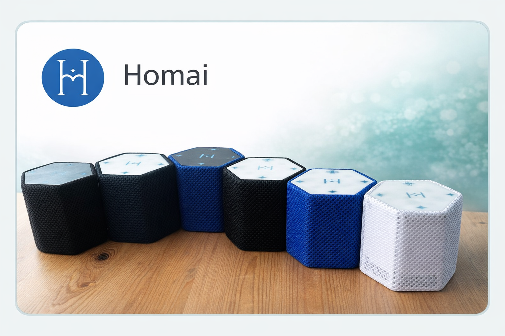

Reference implementation
Homai
A Bashkir-speaking smart speaker.
A real-time voice agent: on-device wake word → ASR/TTS workers → an LLM agent with actions and RAG over user data.
I’m the founder of Homai.
What matters here
- Real-time: voice UX needs predictable latency and stable behavior.
- Agentic actions: the assistant can execute tasks via tools/workflows.
- RAG: answers grounded in user-specific data.
- Production engineering: separate workers/services to control latency and scaling.
Architecture (high-level)
- On-device (C++): wake word and core logic.
- Backend (Go): orchestration, state, queues/workers.
- Workers: ASR / TTS / LLM as independent services.
- LLM agent: answers + actions (routines, automation).
- RAG: retrieval over user data.
Links
- Project site: homai.ru
- Homai Tech: homai.tech
- AI for Good: aiforgood.itu.int
Manufacturing & quality control
We manufacture devices in-house. Our SMD assembly machine runs software we wrote; the pipeline uses ML models and a vision LLM to improve assembly quality and reduce errors.
Media

Want to build a similar voice agent?
Send 3–5 lines of context and I’ll suggest the next step.